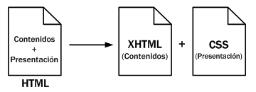

HTML, siglas de HyperText Markup Language, hace referencia al lenguaje de marcado para la elaboración de páginas web. Es un estándar que sirve de referencia para la elaboración de páginas web en sus diferentes versiones, define una estructura básica y un código (denominado código HTML) para la definición de contenido de una página web, como texto, imágenes, entre otros. Es un estándar a cargo de la W3C, organización dedicada a la estandarización de casi todas las tecnologías ligadas a la web, sobre todo en lo referente a su escritura e interpretación. Es el lenguaje con el que se definen las páginas web.
Fuente: HTML, Wikipedia
Fuente: HTML, Wikipedia
HTTP
Hypertext Transfer Protocol o HTTP (en español protocolo de transferencia de hipertexto) es el protocolo usado en cada transacción de la World Wide Web. HTTP fue desarrollado por el World Wide Web Consortium y la Internet Engineering Task Force, colaboración que culminó en 1999 con la publicación de una serie de RFC, el más importante de ellos es el RFC 2616 que especifica la versión 1.1.
Fuente: HTTP, Wikipedia
URL
Un localizador de recursos uniforme o URL —siglas en inglés de Uniform Resource Locator— es un identificador de recursos uniforme (URI) cuyos recursos referidos pueden cambiar, esto es, la dirección puede apuntar a recursos variables en el tiempo. Están formados por una secuencia de caracteres, de acuerdo a un formato modélico y estándar, que designa recursos en una red, como Internet.
Fuente: URL, Wikipedia
Ejercicio 4: cita en bloque
Originalmente, las páginas HTML sólo incluían información sobre sus contenidos de texto e imagenes. Con el desarrollo del estándar HTML, las páginas empezaron a incluir también información sobre el aspecto de sus contenidos: tipos de letra, colores y márgenes.
La posterior aparición de tecnologías como JavaScript, provocaron que las páginas HTML también incluyeran el código de las aplicaciones (llamadas scripts) que se utilizan para crear páginas web dinámicas.
Incluir en una misma página HTML los contenidos, el diseño y la programación complica en exceso su mantenimiento. Normalmente, los contenidos y el diseño de la página web son responsabilidad de diferentes personas, por lo que es conveniente separarlos.
CSS es el mecanismo que permite separar los contenidos definidos mediante XHTML y el aspecto que deben presentar esos contenidos:

Figura 1.2Esquema de la separación de los contenidos y su presentación